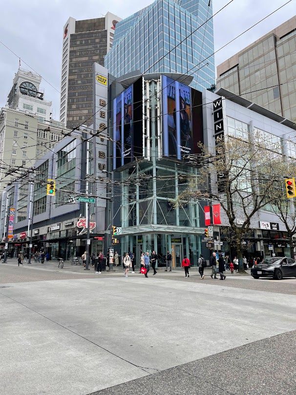
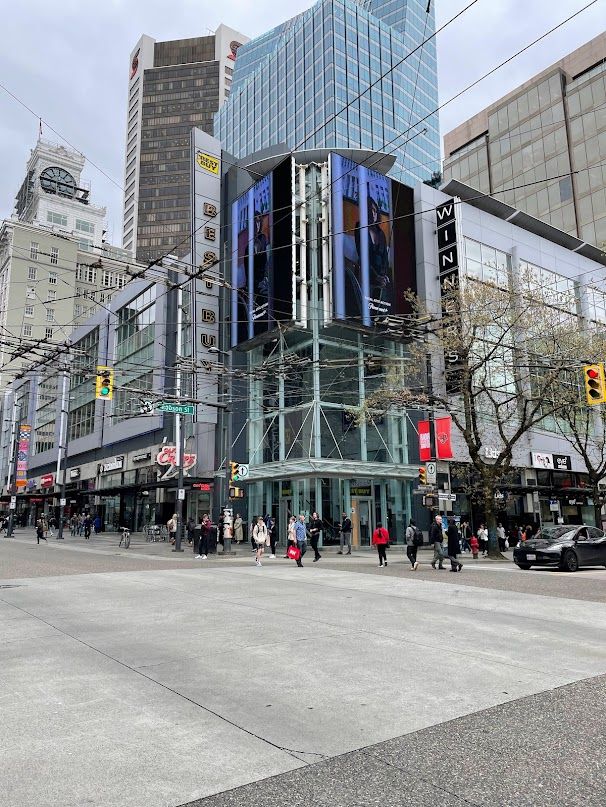

Introduction
- Name：山口 泰生 (やまぐち たいせい), Taisei Yamaguchi
- University：University of Tsukuba (graduation 2023.3)
- Hobbies：Track&Filed, Weight Training, Travel, Cats
*My name is Taisei and I am an aspiring web engineer. After graduating from university, I decided to study abroad to become an engineer instead of going to graduate school. I am always conscious of learning and using better technology. My goal is to develop web services that provide value to people around the world.
Why am I aspiring to be engineer?
* I have experience using programming in the laboratory to analyze experimental results, I was fascinated by its convenience. Through this experience, I learned about the field of web development and decided to pursue a career as an engineer, I decided to pursue a career as an engineer.
Interest, thoughts and goals
* Interested in developing web services that bring benefits to users, I am interested in providing easy-to-use and valuable products. I am particularly interested in back-end development, I am interested in challenging myself with advanced algorithms and data processing. AI is also of strong interest because of its usefulness.
Club Activity (Track & Fields)
* In club activities, I served as a photo judge for competitions in the track and field team, I also competed in the decathlon at the national championships. In addition to athletic ability, I have also developed leadership skills as a team player.
Laboratory Activity
* Biology research investigated the relationship between dopamine and enteroendocrine cells in Drosophila. Developed scientific thinking skills, I had experiences that enhanced my problem-solving skills.
Study Abroad Experience
* To become an engineer in an unfamiliar environment in a foreign country, I put all my energy into my studies. I continued my personal growth as I was exposed to new cultures and languages.
 
